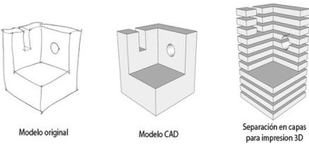
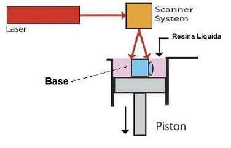

Las impresoras 3D utilizan múltiples tecnologías de fabricación e intentaremos explicar de forma sencilla cómo funcionan. Las impresoras 3D lo que hacen es crear un objeto con sus 3 dimensiones y esto lo consigue construyendo capas sucesivamente hasta conseguir el objeto deseado.
En la imagen vemos 3 figuras. La primera es la que dibujamos nosotros mismos en un papel, por ejemplo, del objeto que queremos imprimir en sus 3 dimensiones, después, con un programa de CAD diseñamos ese objeto en nuestro ordenador que sería la segunda figura, y por último separamos ese objeto en capas para ir imprimiendo capa por capa en la impresora de 3 dimensiones, que es lo que vemos en la tercera figura. Es decir, de un boceto en papel podemos conseguir un objeto en la realidad con el material adecuado. El proceso que utilizan estas impresoras para crear el objetos por capas se llama "proceso aditivo".
Hoy en día ya existen incluso escaner 3D que nos pueden escanear un objeto y directamente verlo en nuestro ordenador para luego imprirlo, sin necesidad de tener que dibujarlo con el ordenador. Esto lo hace todavía más sencillo, de hecho con estos escaneres crear un objeto en 3D es casi como hacer una simple foto.
En las impresoras SLA el funcionamiento es parecido, ya que, en lugar de fundir el material, utilizan la foto solidificación, endureciendo la resina (el material que utilizan) a través de un láser.
